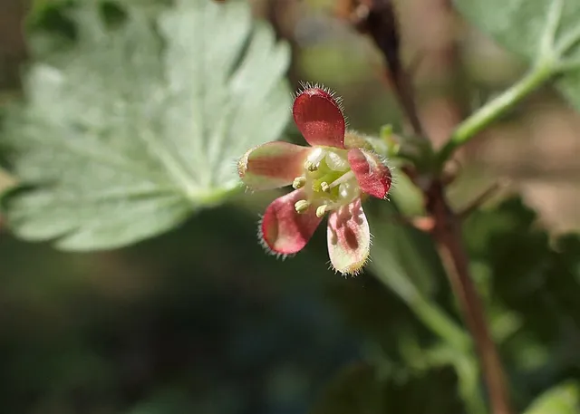

Desserts
Gooseberry meringue cake (Stachelbeerbaiser)
Gooseberry meringue cake (Stachelbeerbaiser) is made with wild gooseberry.

How do you make gooseberry meringue cake (stachelbeerbaiser)?
Gooseberries under a crisp meringue on shortcrust.
Wild ingredients
- Wild gooseberry (Ribes uva-crispa): in season June to July